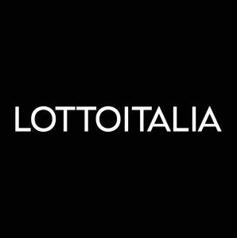

Trade Mark Journal No.2026/003 16 January 2026
UK00004317993 31 December 2025 (9,16,28,35,36,38,41,42)

- Class 9
- Games software; Interactive computer game programs; Gaming software that generates or displays wager outcomes of gaming machines; Computer software for the administration of on-line games and gaming.
- Class 16
- Betting slips; Magazines in the fields of games and gaming; Strategy guide magazines for video games; Strategy guide magazines for card games; Strategy guide books for card games; Booklets relating to games; Computer game hint books; Computer game instruction manuals; Role playing game equipment in the nature of manuals.
- Class 28
- Raffle tickets; Video game apparatus; Automatic gaming machines; Apparatus for games; Machines for playing games of skill or chance; printed scratch-off lottery tickets; lottery tickets.
- Class 35
- Sponsorship search; Promotion of goods and services through sponsorship of sports events; Provision of advertising space on a global computer network; Rental of advertising space; Rental of advertising space on-line; Intermediary services relating to the rental of advertising time and space; Rental of advertising time on communication media; Press office services; Arranging and conducting marketing promotional events for others.
- Class 36
- Financial sponsorship of entertainment activities; Fundraising and sponsorship; Fundraising and financial sponsorship; Project financing; Financial consultancy for lottery winners; financial consulting in the public gaming sector.
- Class 38
- Providing access to gambling and gaming websites on the internet; Telecommunication services.
- Class 41
- Gambling services; Wagering services; Betting services; Organising and conducting lotteries; Conducting lotteries for others; Organization of lotteries; Providing online entertainment in the nature of game shows; Providing online entertainment in the nature of game tournaments; Organisation of competitions and awards; Arranging of contests; Organisation of tournaments; Entertainment services; Casino services; services related to lotteries and betting; game equipment rental; games provided online through a computer network; entertainment services.
- Class 42
- Development of computer hardware and software; Design of computer hardware and software.
BRIGHTSTAR LOTTERY S.p.A.
Representative: Stevens Hewlett & Perkins